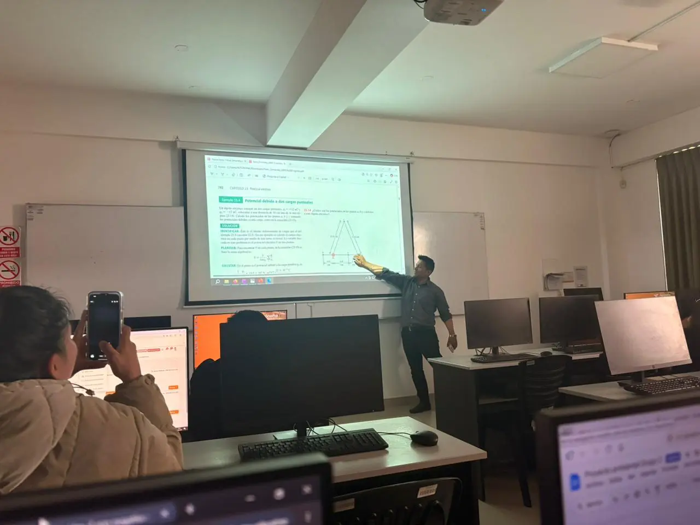

Attend classes at university and study different subjects.
Review what I learned during the week and catch up.
I never miss my English class to improve my language skills.
Spend time with family and organize the week ahead.
I organize my week every Sunday and always review what I learned to stay on track with my goals.